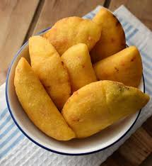

Recipe to make empanadas

Venezuelan empanadas are crescent-shaped pastries, they are made from corn
flour - which makes them distinctive from other types of empanadas - and
any type of filling that can withstand frying. Not to mention that they
are gluten-free empanadas, so they are appropriate for this type of
intolerance.
Ingredients
- salt
- cheese
- water
- precooked corn flour
- oil
Steps
- Put water, flour and salt in a bowl and mix until you obtain a
homogeneous dough.
- Create balls of dough and then flatten them until they are as thin as
possible.
- Place the cheese in the middle of the dough and close it. The dough
should be in the shape of a half moon.
-
Fry the empanadas one or two at a time until golden brown.